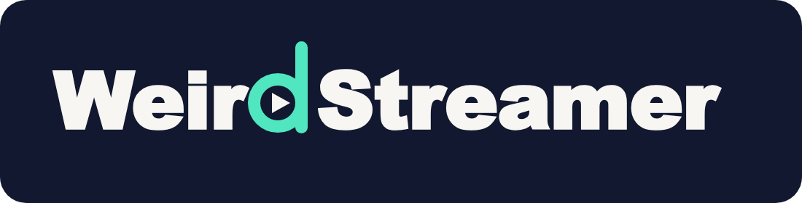
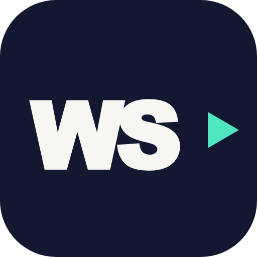
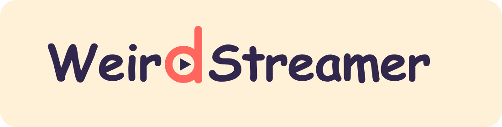
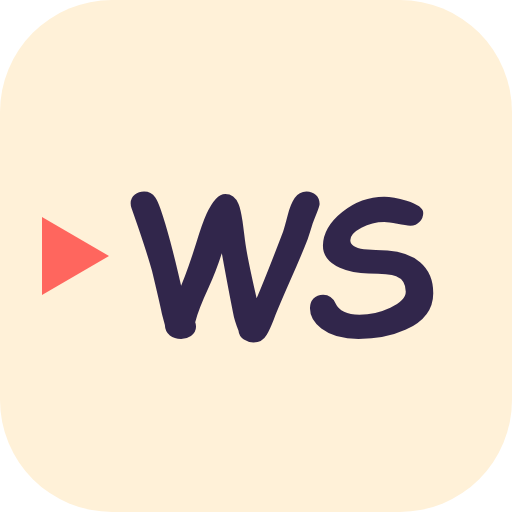
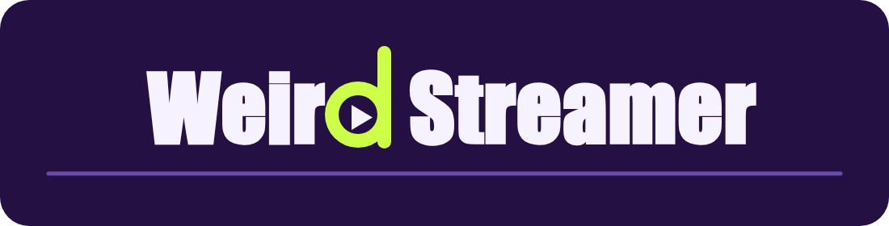
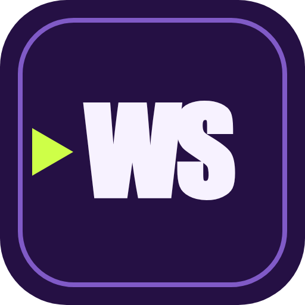

Four bold-letter directions with a custom play-button “d” and a matching WS app icon. These are explorations, not final artwork.
Clean, confident, mint-on-midnight.


Friendly rounded letters, warm colors.


Condensed, punchy, with a neon arcade edge.


Warm, cinematic, and a little more grown-up.